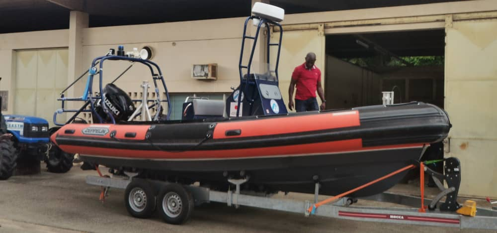
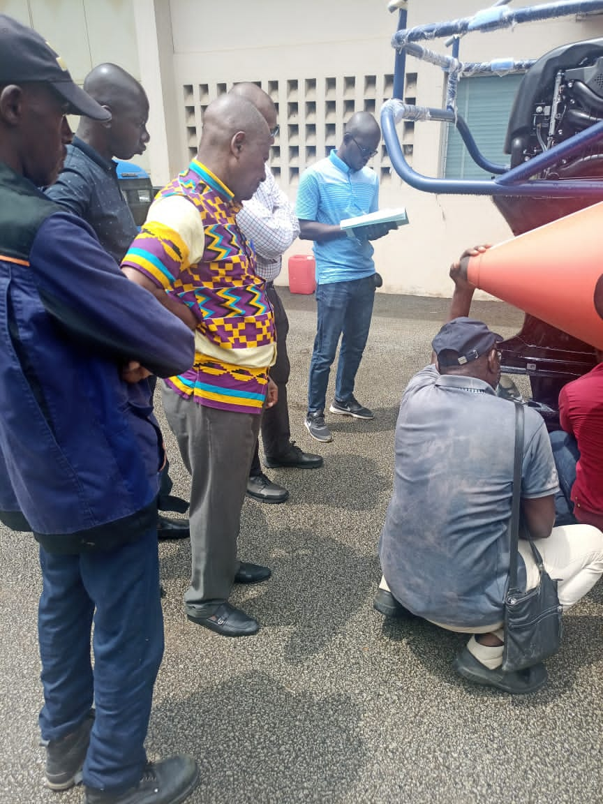
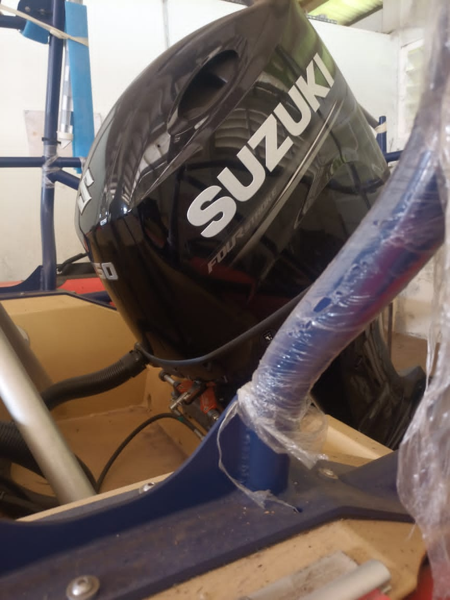
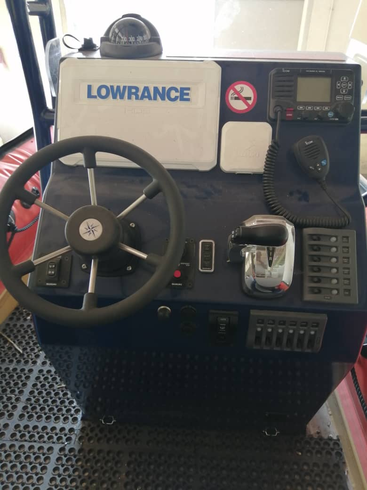
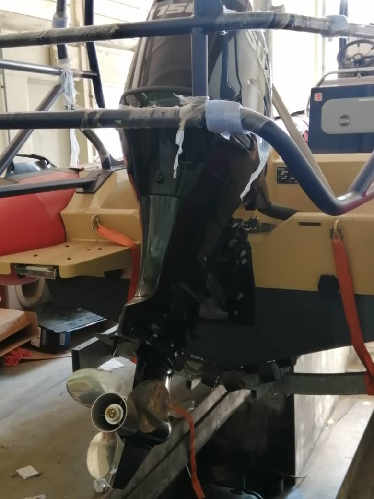
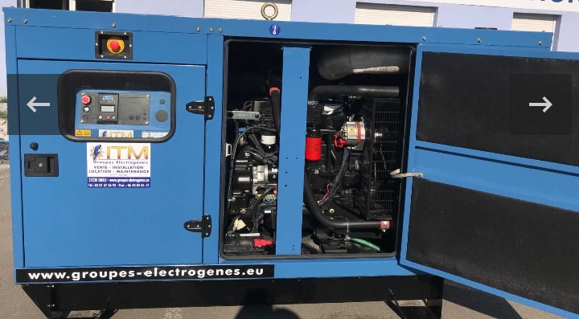
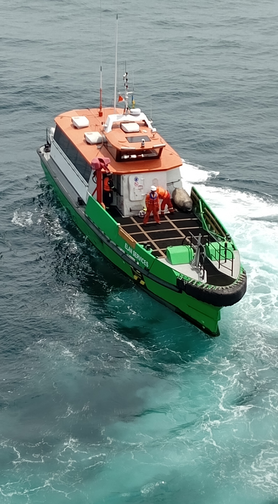
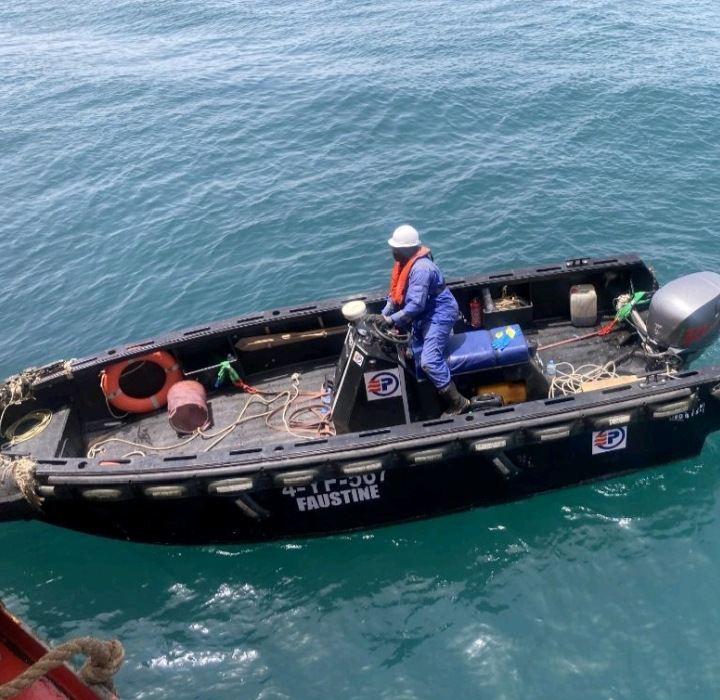

💨
Compresseurs d’air
Diagnostic, maintenance préventive et corrective, contrôle pression/température/vibrations, fuites, filtres, moteurs et protections.
Diagnostic électronique, inspection, maintenance préventive et corrective, mécanique, électricité, énergie et solutions technologiques pour vos équipements.
Une panne d’équipement peut immobiliser toute une activité.
Anticiper, c’est éviter l’arrêt.
PRUMID POLYTECHNIQUE MARINE SARL est une entreprise ivoirienne spécialisée dans les services techniques, la maintenance marine et industrielle à Abidjan et en Côte d’Ivoire.
Nous accompagnons les particuliers, entreprises, exploitants maritimes et industriels avec des solutions adaptées à leurs équipements et à leurs besoins, dans une logique de qualité, sécurité, fiabilité, réactivité et traçabilité.
Diagnostic, maintenance préventive et corrective, contrôle pression/température/vibrations, fuites, filtres, moteurs et protections.
Diagnostic électrique et mécanique, vidange, filtres, refroidissement, lubrification, batteries, démarrage, alternateurs et puissance.
Diagnostic, entretien et dépannage de pompes, contrôle roulements, garnitures, accouplements, vibrations, moteurs et commandes.
Maintenance mécanique et électrique, systèmes hydrauliques, commandes, capteurs, dispositifs de sécurité et inspection fonctionnelle.
Moteurs hors-bord et in-bord, diesel et essence, motorisations auxiliaires, diagnostic, entretien, réparation et remise en service.
Installation et réhabilitation d’équipements, GPS, géolocalisation, vidéosurveillance, assistance technique et solutions électriques.
Analyse méthodique des pannes afin d’identifier les causes et limiter les immobilisations inutiles.
Programmes d’entretien adaptés aux équipements, à leurs heures de fonctionnement et aux contraintes d’exploitation.
Fiches d’intervention, contrôles, rapports techniques et suivi des opérations pour une meilleure maîtrise de vos actifs.
Une entreprise basée à Abidjan, au plus près des besoins maritimes, industriels, énergétiques et BTP.
Révisions périodiques, diagnostic électronique, vidanges, filtres, bougies, contrôles de fonctionnement et remise en service.
Entretien moteur Diesel, batteries, systèmes de démarrage, alternateurs, circuits électriques et essais de fonctionnement.
Recherche de panne, maintenance, contrôle pression/température/vibrations, circuits d’air, moteurs et protections.
Inspection, installation, réhabilitation, GPS, géolocalisation, vidéosurveillance et accompagnement technique.
Prochaine étape : intégrer vos propres photos d’intervention pour renforcer la preuve de savoir-faire et la crédibilité commerciale.
PRUMID structure ses interventions pour améliorer la sécurité, la fiabilité et le suivi technique des équipements.
Informations client, équipement, site d’intervention et symptômes signalés.
Contrôles, vérifications, mesures, défauts détectés et observations techniques.
Maintenance préventive ou corrective, pièces, lubrifiants et consommables utilisés.
Essais après intervention : démarrage, charge, refroidissement, commandes et fonctionnement.
Commentaires techniques, recommandations, rapport d’intervention et historique de maintenance.
Nous privilégions ici des photos d’équipements, d’embarcations et d’inspections techniques pour montrer concrètement les environnements dans lesquels PRUMID intervient.








Les photos peuvent être complétées progressivement par vos interventions les plus récentes, avec date, type d’équipement et nature des travaux.
Parce que la maintenance préventive est un investissement dans la sécurité, la disponibilité et la continuité de votre activité.
Parlez-nous de votre équipement, de la panne ou du programme d’entretien souhaité. Nous vous répondrons rapidement.
Qualité – Sécurité est notre Passion
📍 Adresse : Abidjan – Côte d’Ivoire
21 BP 729 Abidjan 21
📧 E-mail : prumidpolytechniquemarine@gmail.com
📱 Téléphones :
(+225) 01 02 02 49 84
(+225) 07 59 07 29 84
RCCM : CI-ABJ-03-2024-B12-00936
N°CC : 2400701M